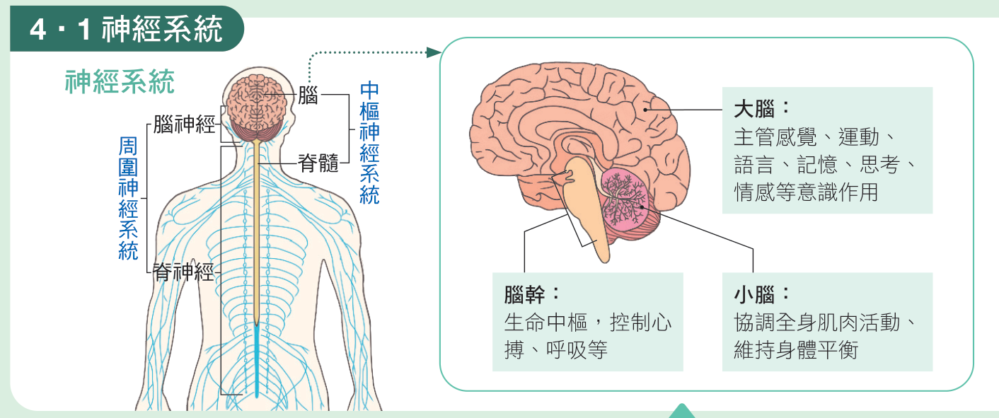
Dc-IV-1-1 受器與動器Dc-IV-1-2 神經元構造（細胞本體、神經纖維）Dc-IV-1-3~6 中樞神經與周圍神經分工Dc-IV-1-7 神經傳導途徑與反應時間Dc-IV-1-8 意識行為（練習效應）與反射Dc-IV-1-9 反應時間的測定、統計與討論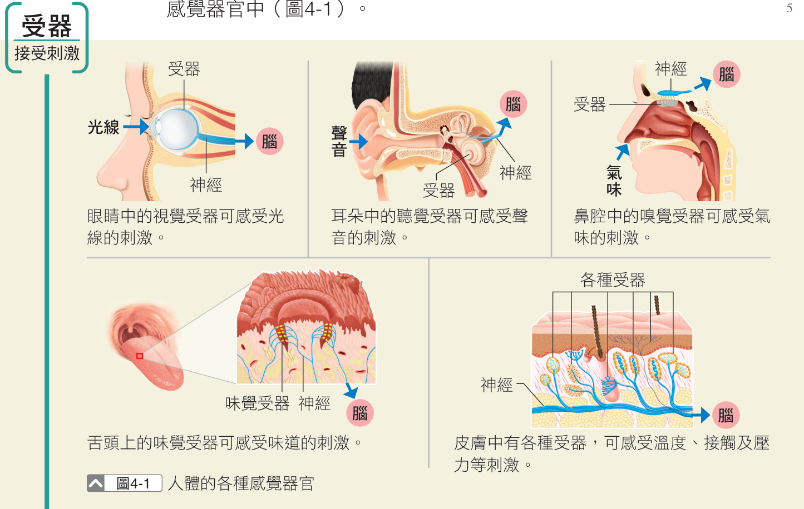
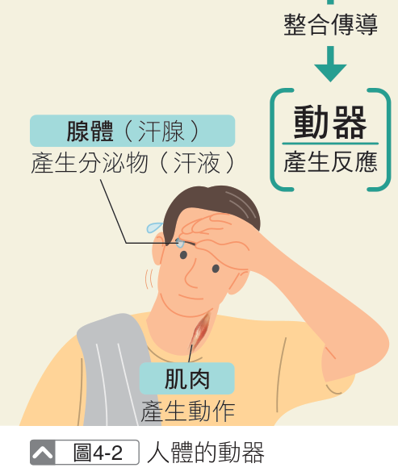
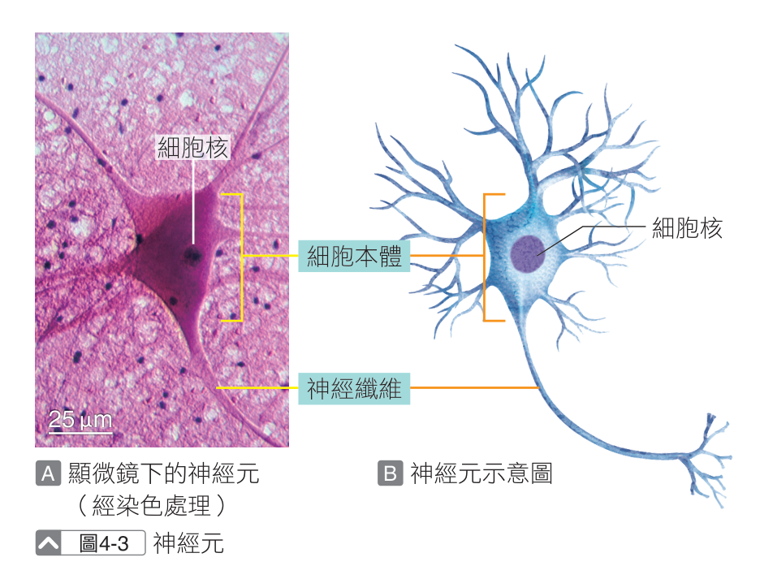
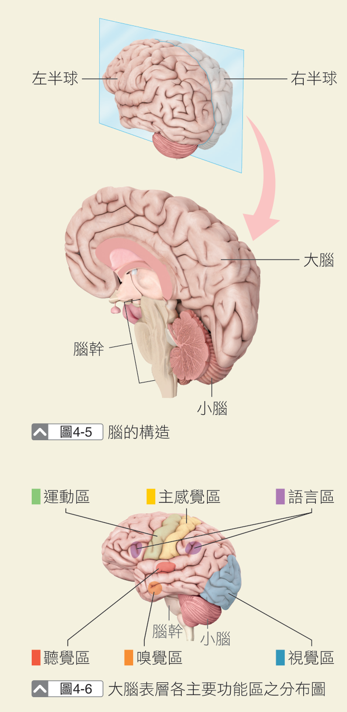
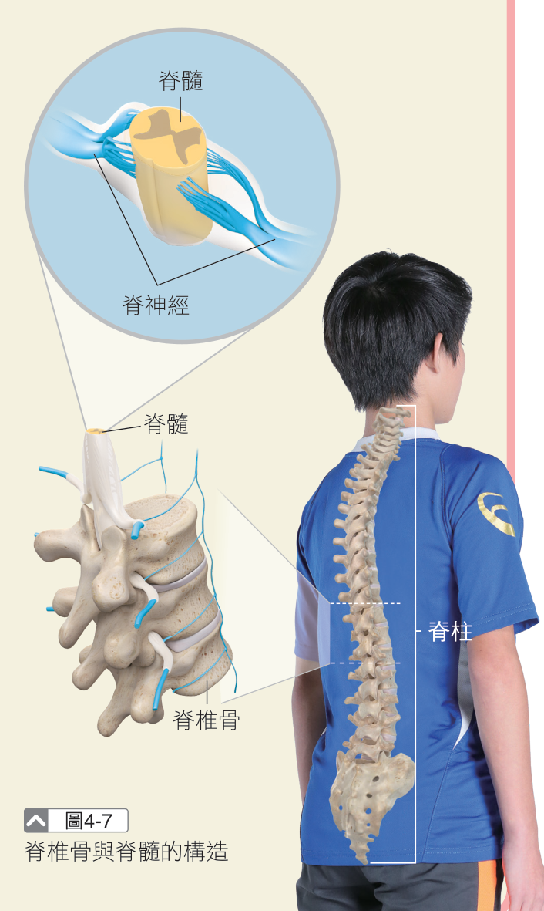
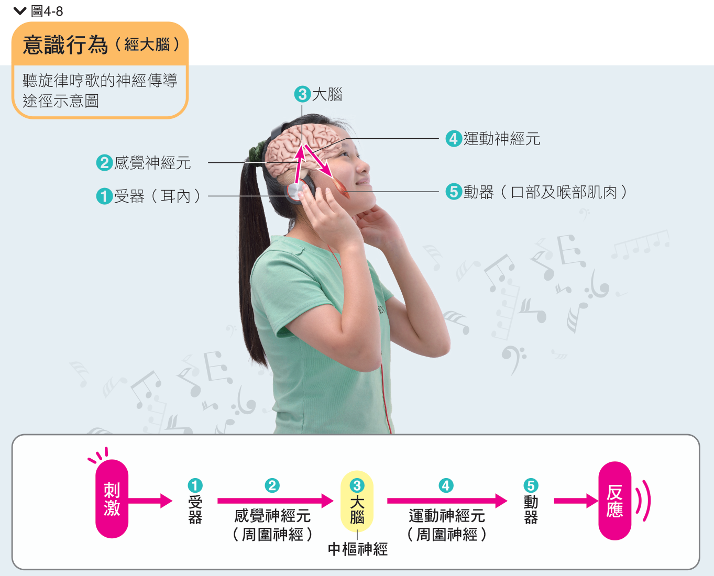
耳內受器 → 感覺神經元(聽神經) → 大腦 → 運動神經元(腦神經) → 口喉肌肉
👉 因為耳朵與嘴巴都在頭部，直接由腦神經傳遞，不經過脊髓！
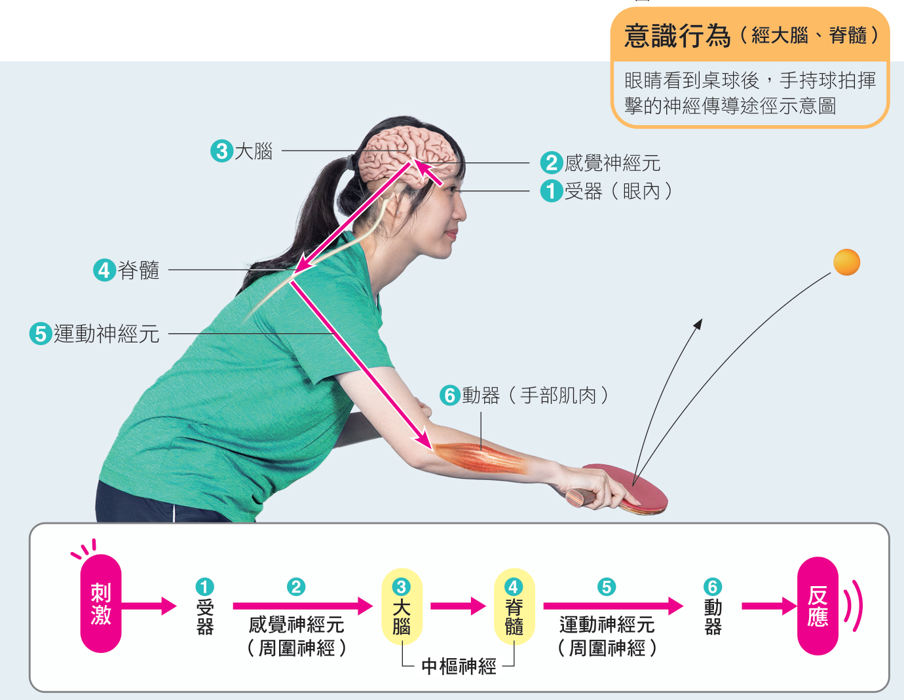
眼內受器 → 感覺神經元(視神經) → 大腦 → 脊髓 → 運動神經元(脊神經) → 手部肌肉
👉 眼睛在頭部，但手部肌肉在頸部以下，大腦指令必須經過脊髓與脊神經才能傳到手部！
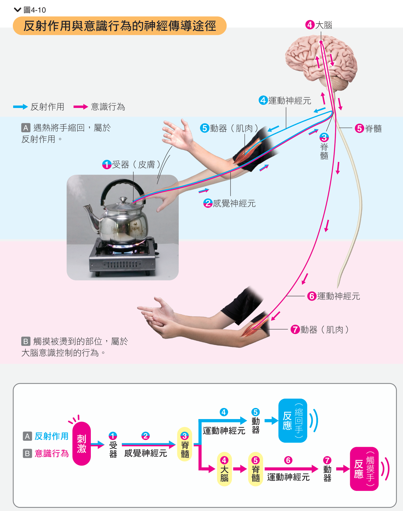
皮膚受器 → 感覺神經元 → 【脊髓】 → 運動神經元 → 手臂肌肉(縮回)皮膚受器 → 感覺神經元 → 脊髓上傳 → 【大腦痛覺區】 → 脊髓 → 運動神經元 → 手部肌肉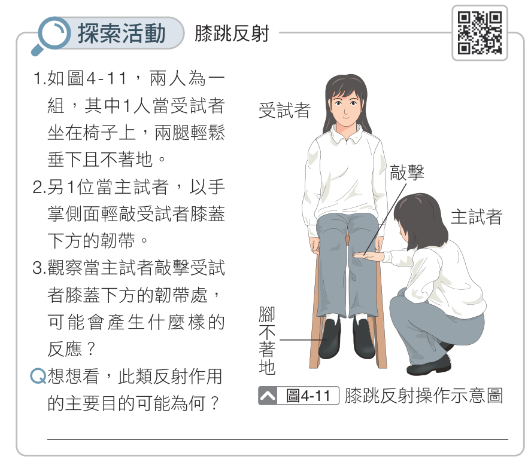
• 脊髓反射（頸部以下）：手碰熱縮回、腳踩尖物、膝跳反射。
• 腦幹反射（頭頸部）：強光瞳孔縮小、異物眨眼、打噴嚏、流唾液。
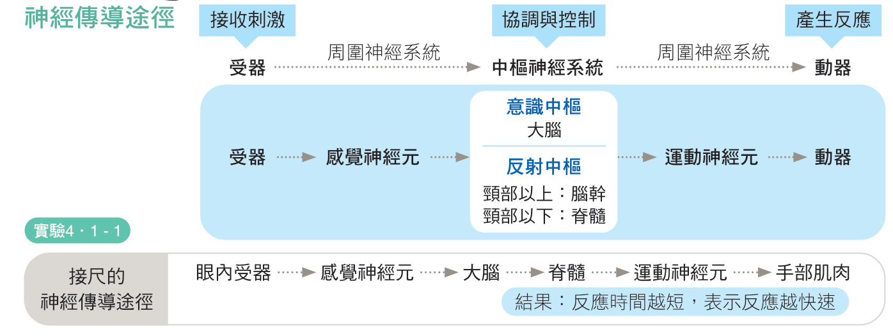
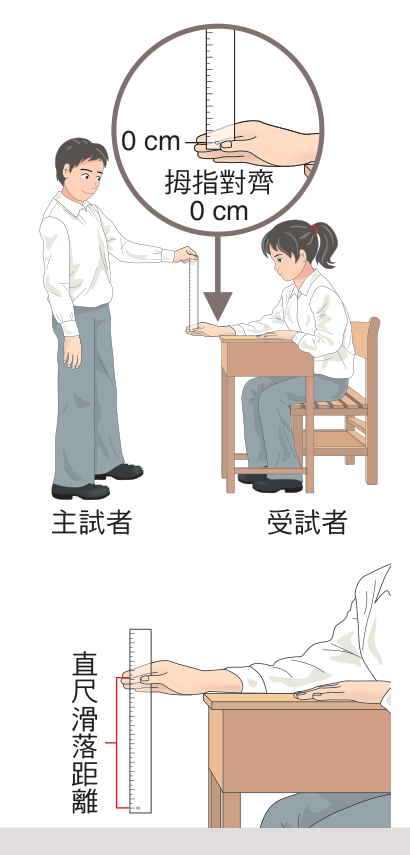
2 cm，拇指尖對齊直尺 0 cm 刻度處，且不能碰到直尺。拖動滑桿，將直尺滑落距離（cm）換算為反應時間：
💡 滑落距離越短 ＝ 反應時間越短！接尺如何避免主試者放尺暗示誤差？接下來進入數位實驗！
眼睛(受器看紅轉綠) → 視神經 → 大腦(視覺區→運動區) → 脊髓 → 脊神經 → 手指肌肉(點擊)https://otterlin.github.io/reaction-color-game/
https://otterlin.github.io/reaction-shooting-game/
180 ～ 250 ms。300 ～ 450 ms！3.34 公尺13.36 公尺（多衝出 10 公尺！）40 公尺55 公尺！
📱 課堂總結任務：請開啟平板完成因材網 Dc-IV-1 後測評量，回家可使用兩個數位實驗網站測試家人或比較慣用手 vs. 非慣用手的 5 次平均反應時間！